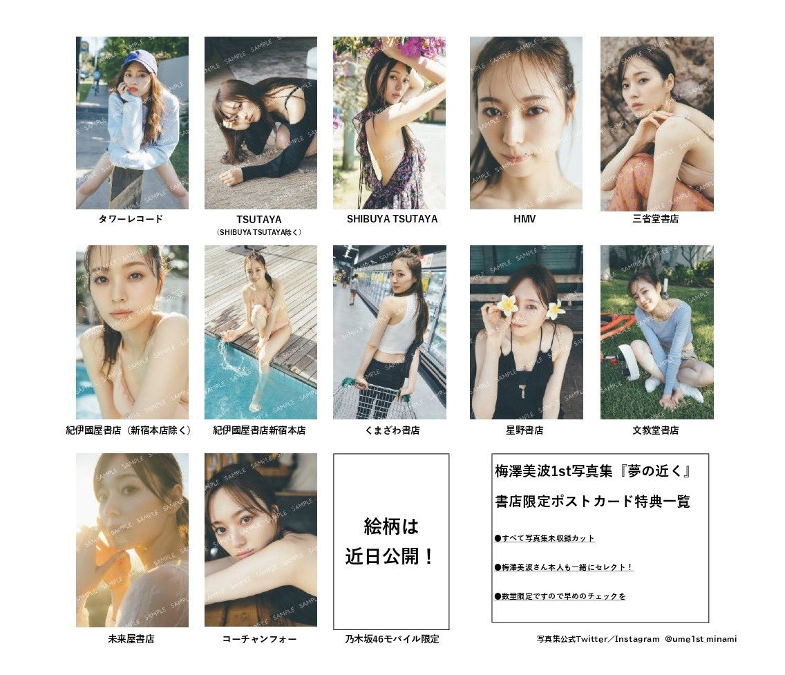
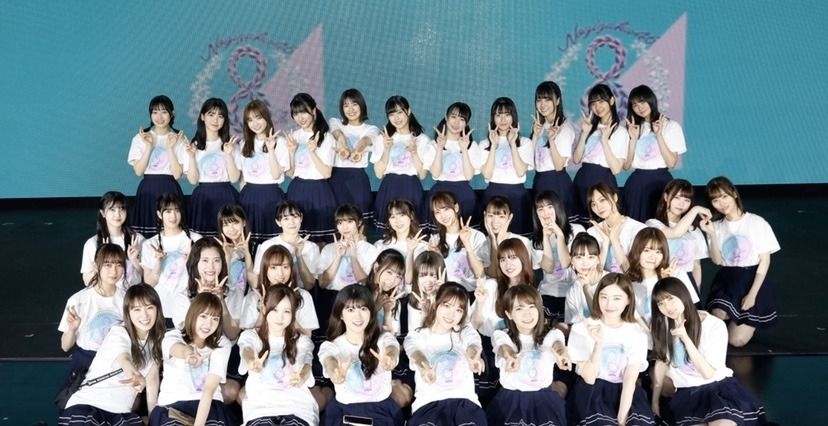

意外とタフなのかもしれないと考えるように
いつもと少しカラーを変えてもらいました☀︎
夏は暑いから、、
髪の毛短くしたくなるね、、
最近は暇さえあれば
グルメサイトを見ています。
美味しいものを食べる妄想してる。
１ヶ月くらい前から
ずーっと食べたいと思ってるのはチーズナン。
バターチキンカレーが一番好き。
なんて思ってたらこの間の乃木中で
みんなカレー食べてて夜中にお腹すいてしまった、、
しかもチーズナンにバターチキンカレーて、、
普段ゲームしないことを悔やんだ、、
今夜の乃木中もお楽しみに！
この間ほんっっとに恥ずかしい事があってね
もう本当にね、どうしようもなく恥ずかしくて
すぐにどこかへ走り去りたくなったけど
みんなが笑ってくれたから
なんだか私まで笑顔になれて
たまにはこんな失敗もありなのか〜！と
前向きになれました。
皆様の目に触れるかどうかはまだ分かりませぬが
収録中の出来事だったので、、もしかしたら、
ですね。（笑）
それと、この間
車から降りた瞬間滑って
綺麗にズッコケて尻もちついて
それもまた、恥ずかしかった。
久しぶりにあんなに綺麗にズッコケたよ。
何事も無かったかのように歩き出したら
大丈夫ですか
と優しく声をかけて下さった女性がいて
大丈夫です、ありがとうございます と
笑って終われました
笑顔ってすごいなあ！！！
写真集の店舗限定ポストカードが
解禁になりました❤︎

スタッフさんと話し合いながら
一枚一枚選んだ写真たち。
今回写真集の発売にあたって
初めてこんなに毎日自分の写真をまじまじとじっとりと眺めて
写真をセレクトしたりする作業をして、
本当にメイクとヘアで顔って変わるなあ
面白いなあ と思う毎日です、、
メイクやファッションの力を改めて感じます！
こちら全て写真集未収録カットになってます◎
数量限定のものもあるので
皆様ぜひチェックしてみてくださいませ！❤︎
つい先日最終チェックをしてきまして、
もうこれが一冊になるのかあ、、と
なんだかしみじみしてしまいました。
今回、写真集は、
私自身が多くリクエストして作ったというより
ほとんどお任せして、
少しだけ私もそこに加わるという形だったので
私自身写真を眺めていても物凄く新鮮で
楽しいです、、
自分がよいと思っていた顔と
誰かがよいと思ってくれた顔は全然違くて、
だからこそ色んな私を引き出してください！の一心で
今回の写真集に挑みました。
楽しみに待っていてください！
一緒に喜んでくださる皆様に、
満足してもらえるような一冊になるよう
あと約１ヶ月、もっともっと頑張ります！
本当にいつもありがとうございます、、
浴衣は気分あがりますね〜！！
２４時間テレビに出演させていただきました！
ありがとうございました。
ひたすらに目の保養でした。癒し。
世界中の隣人よ、シンクロニシティを
披露させていただきました！
それから裏配信にもお邪魔させていただき、、
指原さんと春菜さんとお話出来て
とても、とっても楽しかったです。
すごく緊張してしまった(；；)
観てくださった皆様ありがとうございました！
梅澤ばかりですみませぬ、、
今日はアイラブユーの日なんですって。

では。
また書きます！
伝えられるときに、
ちゃんと言葉にしようと思います◎
まだ100%はできていないけどね( ˙-˙ )
Original：https://www.nogizaka46.com/s/n46/diary/detail/57543?ima=4936&cd=MEMBER